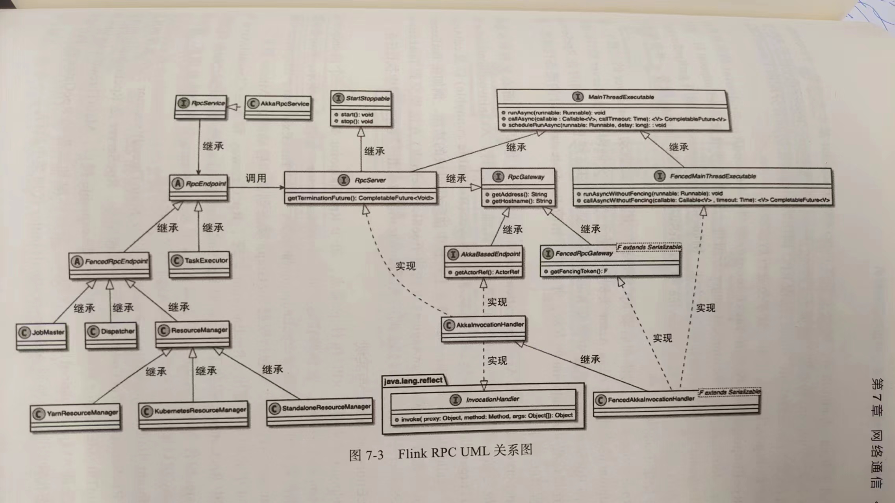
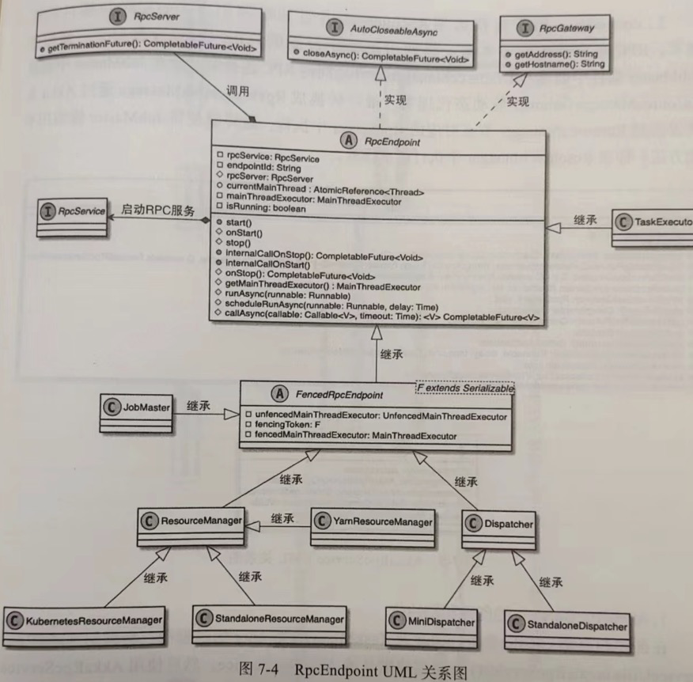
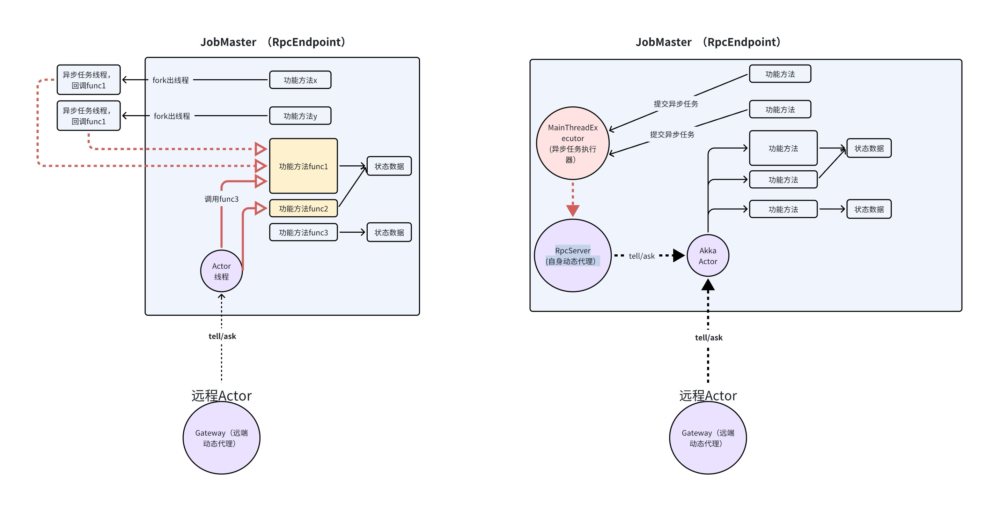
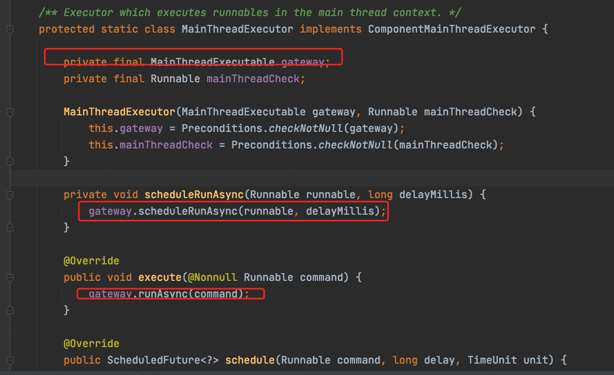
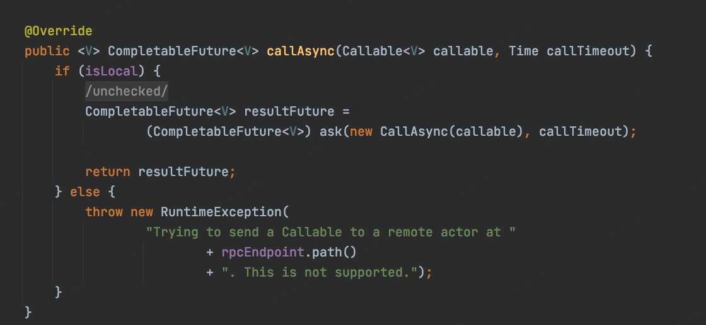
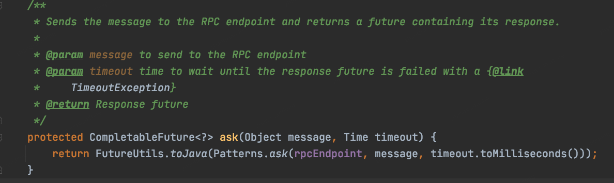

前言
RPC 通信是分布式计算框架的基础，各个组件之间的交互，信息的传递都通过RPC进行，Flink的RPC框架设计比较复杂，本篇重点梳理框架中的各个角色及作用，但需要注意的是IO重点是通信，是工具，不影响业务设计，RPC的合理设计目的就是为了在编写业务代码时，能像调用本地方法一样调用远程方法，例如jobmaster 调用exector的某个方法，代码里看到的是本地方法，对Flink框架而言毫无感知，但实际上底层是RPC通信。
运行时RPC架构设计

Flink Rpc的整体关系图可以参考上图，我们只需要重点关注其中几个角色即可。
RpcEndpoint
对外服务的接口，提供了rpc服务的基本实现，所有可以提供对外服务的组件都要继承这个类。包含了endpointId，用于唯一标识当前的RPC节点。RpcEndPoint 通过RpcService 启动RpcServer，之后通过RpcServer完成本地和远程的线程执行。
RpcService
RpcService 提供了创建和启动 RpcServer 的方法，在启动RpcServer 的过程中，通过 RpcEndpoint 的地址创建 Akka Actor 实例，并基于 Actor 实例构建 RpcServer 接口的动态代理类，向RpcServer的主线程中提交Runnable 以及 Callable线程等。同时在 RpcServic中提供了连接远程 RpcEndpoint 的方法，并创建了相应 RpcGateway 接口的动态代理类，用于执行远程 RPC 请求。
RpcGateway
负责在EndPoint的基础上提供生命周期的管理，每个角色都有对应的gateway，如果连接jobmaster只需要获取到jobmastergateway 直接进行操作。
RpcServer
AkkaInvocationHandler 动态代理类实现，所有远程或本地的执行请求最终都会转换到 AkkaInvocationHandler 代理类中执行。AkkaInvocationHandler 实现了MainThreadExecutable接口，提供了runAsync(Runnable runnable)以及 callAsync(Callable
从名字上，RpcServer提供一个serve的能力，处理远程调用的，同时也处理本地的请求。
MainThreadExecutable
类似线程池接口，规定了一些可以执行的异步操作。
Endpoint的设计

RpcEndpoint 中包含 RpcService、RpcServer 以及MainThreadExecutor 三个重要的成员变量，其中RpcService是RpcEndpoint 的后台管理服务，RpcServer是RpcEndpoint 的内部服务类，MainThreadExecutor封装了MainThreadExecutable接口，MainThreadExecutable 的主要底层实现是 AkkalnvocationHandler代理类。所有本地和远程的 RpcGateway 执行请求都会通过动态代理的形式转换到 AkkaInvocationHandler 代理类中执行。
异步执行的设计
前面我们一直在提到，本地执行和远程执行都是走Handler执行，这是如何做到的呢？
实际上，flink通信中，我们可能会涉及到 心跳、通信等很多异步执行的操作，多线程的异步执行尤其在维护一些内部的一些信息 很容易产生并发问题，而且很多模块中 不同模块干了许多不同的事情，相同过线程通信完全解决并发问题就太困难了，Flink中 它就是通过所有的异步操作，全部转发到Handler 以消息的形式发送给actor，最后由handler的这个线程进行执行的。

我们看一下源码中
Endpoint 的 MainThreadExecutor 持有MainThreadExecutable对象，而MainThreadExecutable实现实际上就是AkkaInvocationHandler

而AkkaInvocationHandler 实现的异步方法最终都是到了callAsync方法，并且看到，实际上异步方法就是调用ask方法，并且从提示可以看出 不支持给远程actor发消息，也就是说异步方法其实是给本地发送消息

ask方法

小结
Rpc 这块使用了大量的动态代理，目的就是拿到jobmaster 代理类，拿到exector代理类，当调用他们的方法时候 被代理类捕获到 转而执行远程通信 而使用方无需关心 如何通信的，为什么设计这么复杂，就是为了使用方便，为了让写flink框架的业务人员对通信操作无感知。

...
...
This is copyright.